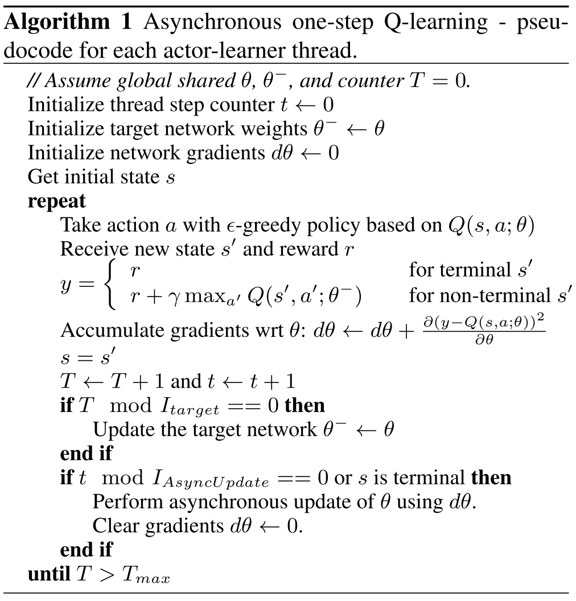
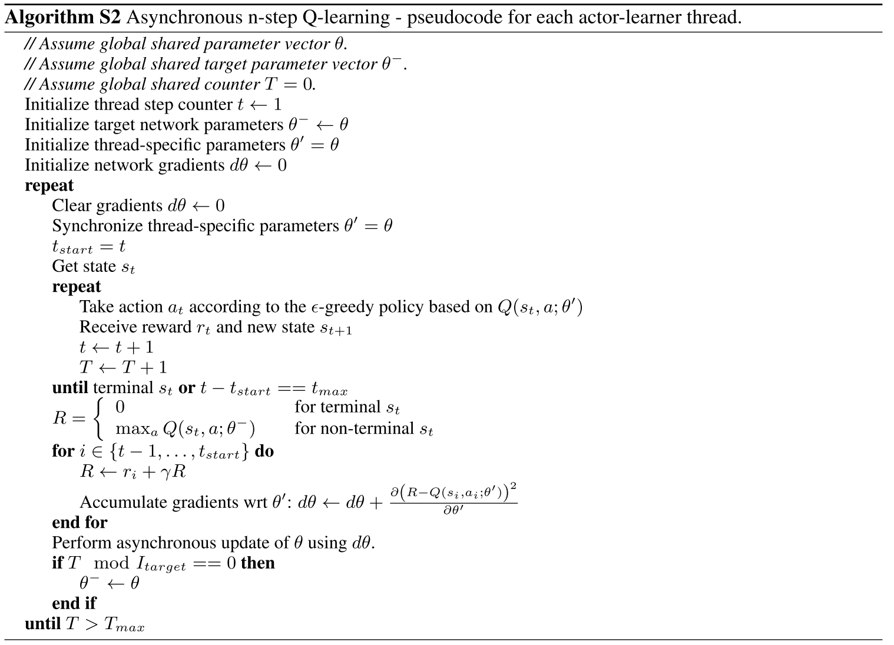
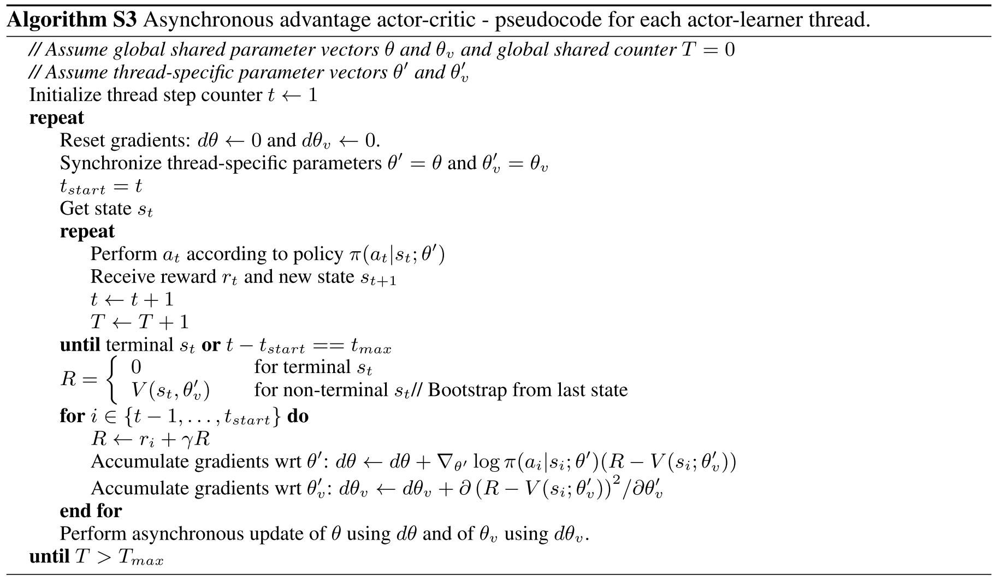

Asynchronous Methods for Deep Reinforcement Learning
Reinforcement Learning Background
Environment \(E\), time step \(t\), state \(s_t\), action \(a_t\), possible actions \(A\), policy \(\pi\), scalar reward \(r_t\).
Return \(R_t = \sum_{k=0}^\infty \gamma^k r_{t+k}, \gamma \in (0, 1]\).
Action value \(Q^\pi(s, a) = \mathbb{E}[R_t | s_t = s, a]\) (expected return).
Optimal action value function \(Q^*(s, a) = \max_\pi Q^\pi(s, a)\).
State value \(V^\pi(s) = \mathbb{E}[R_t | s_t = s] = \sum_{a \in A} \pi(a | s) · Q^\pi(s, a)\).
value-based method (Q-learning)
\(Q(s, a ; \theta) \approx Q^*(s, a)\).
The \(i\)th loss function:
$$ L_i(\theta_i) = \mathbb{E}(r + \gamma \max_{a'} Q(s', a' ; \theta{i-1}) - Q(s, a ; \theta)) ^ 2 $$
where \(s'\) is the state encountered after state \(s\).
One-step Q-learning.
policy-based methods
\(\pi(a | s ; \theta)\).
Update the parameters \(\theta\) by performing, typically approximate, gradient ascent on \(E[R_t]\).
REINFORCE:
- Updates the policy parameters \(\theta\) in the direction \(\nabla_\theta \log \pi(a_t | s_t ; \theta) R_t\) which is an unbiased estimate of \(\nabla_\theta \mathbb{E} [R_t]\).
- Reduce the variance of this estimate while keeping it unbiased by subtracting a learned function of the state \(b_t(s_t)\), known as a baseline (Williams, 1992), from the return. Resulting gradient: \(\nabla_\theta \log \pi(a_t | s_t ; \theta) (R_t - b_t(s_t))\).
Actor-critic:
- A learned estimate of the value function is commonly used as the baseline \(b_t(s_t) \approx V^\pi(s_t)\) leading to a much lower variance estimate of the policy gradient.
- The quantity \(R_t − b_t\) used to scale the policy gradient can be seen as an estimate of the advantage of action at in state \(s_t\), or \(A(a_t, s_t) = Q(a_t, s_t)−V(s_t)\).
Asynchronous RL Framework
First, asynchronous actor-learners, multiple CPU threads on a single machine.
Second, make the observation that multiple actors-learners running in parallel are likely to be exploring different parts of the environment, use different exploration policies in each actor-learner to maximize this diversity.
Benefits:
- Stabilizing learning: By running different exploration policies in different threads, the overall changes being made to the parameters by multiple actor-learners applying online updates in parallel are likely to be less correlated in time than a single agent applying online updates.
- Reduction in training time that is roughly linear in the number of parallel actor-learners.
- Able to use on-policy reinforcement learning methods such as Sarsa and actor-critic to train neural networks in a stable way.
Asynchronous onestep Q-learning

Asynchronous one-step Sarsa
Same as asynchronous one-step Q-learning except that it uses a different target value for \(Q(s, a)\) : \(r + \gamma Q(s', a' ; \theta^-)\).
Asynchronous n-step Q-learning

Asynchronous advantage actor-critic (A3C)
A3C maintains a policy \(\pi(a_t|s_t; \theta)\) and an estimate of the value function \(V(s_t; \theta_v)\).
Like the variant of n-step Q-learning, the variant of actor-critic also operates in the forward view and uses the same mix of n-step returns to update both the policy and the value-function.
